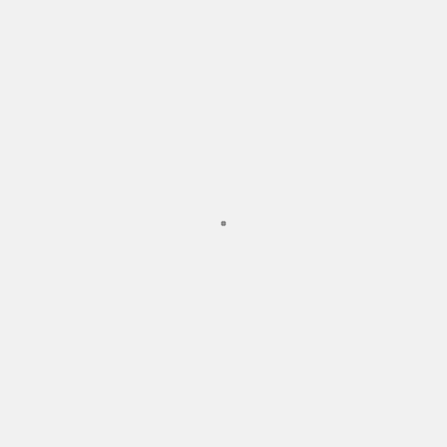
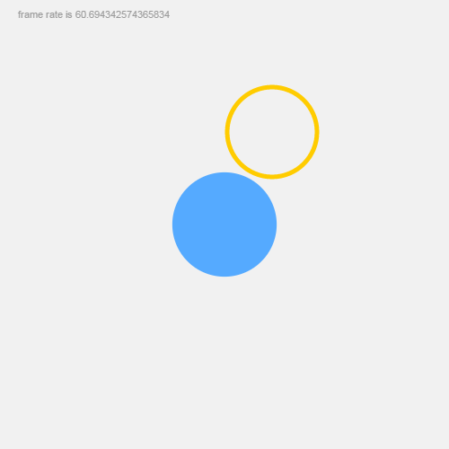
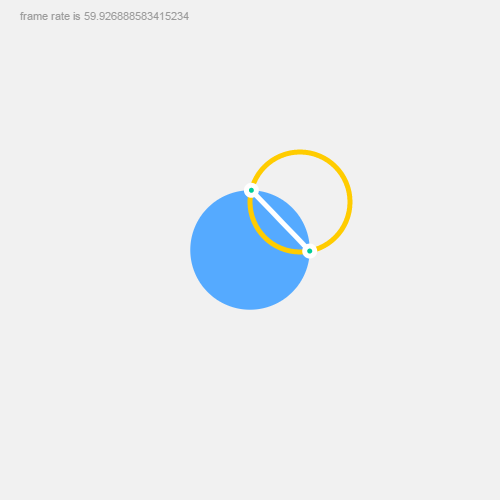

Pt: Quick Start Guide
This guide discusses the main concepts of Pt, and walks through the code to create a simple interactive sketch with Pt.
If you are learning to code, there's also a friendlier, non-technical guide to get you started.
As you know, Pt is based on the ideas of Point, Form, and Space. So we'll be creating a space, a form, and a point (and their extensions).
0. Spoiler!
Here's the thing we'll be building, and here's the final source code. Pretty fun with less than 40 lines of javascript, right?
1. Setting up and drawing a point
The simplest way to create a space is to use CanvasSpace, which is included in the core library.
var space = new CanvasSpace();
This assumes you have, in your html, an element with attribute id="pt". For example <div id="pt"></div> or <canvas id="pt"></canvas>.
Optionally, You can also specify an id to target an existing element, which can be a container element like <div>, or a <canvas> itself.
Also you may use setup() to specify background color and another options. For example:
var space = new CanvasSpace("#hello").setup( {bgcolor: "#f1f5f7"} );
After creating a space, we will create a Form to work with that space. A form is like a brush, a way of visualizing the points.
The Form class works with html canvas and draws basic shapes. We create an instance of it by passing space into it.
var form = new Form(space);
You may realize that Space and Form can be extended to create different kinds of expressions in different media. And you're absolutely right! Can it control a robot to graffiti a clumsy circle on a wall? It's possible.
Now let's create a point. Just a simple point.
var dot = new Point( 250, 250 );
How do we put this point into space and draw it with the form we just created?
All instances of Space let you add objects into it, as long as the object includes an animate callback function.
Imagine each object is like an actor, keeping track of time and doing dramatic stuff. Let's create one such object.
var bot = {
animate: function( time, fs, context ) {
form.point( dot ); // the bot will use form to draw a point
}
};
space.add( bot ); // adding the bot object into space
space.play();
The animate function has 3 parameters: time which keeps track of time elapsed in milliseconds, fs tells you the milliseconds passed since last frame (ie, frame-rate is 1000/fs), and context is the Space's context which is the canvas graphics context in this case.
Finally, we add the bot into space, and seeing that everything is ready, we call space.play() to start. If you see a gray point appears in your canvas, you're doing it right!

2. Drawing a circle and making it move
Too boring? Let's change the dot to a Circle.
var dot = new Circle( 250, 250 ).setRadius( 50 );
var bot = {
animate: function( time, fs, context ) {
form.fill( "#5AF" ).stroke( false );
form.circle( dot );
}
};
As you can see, everything is almost the same, except the dot is now a circle with 50px radius. And we apply Form's fill() and stroke() functions to color the circle blue with no stroke.
A side note: Form's functions can usually be chained together. For instance, you can also write this as form.fill(...).stroke(...).circle(dot).
Still kind of dull, right? Let's animate this dot.
var bot = {
animate: function( time, fs, context ) {
form.fill( "#999" );
form.text( new Point( 20, 20 ), "frame rate is "+(1000/fs) ); // draw frame rate as text
form.fill( "#5AF" ).stroke( false );
dot.setRadius( Math.abs(500 - time % 1000)/20 + 20 ); // dynamic radius that pulsates based on time
form.circle( dot );
}
}
Here we calculate the frame-rate and draw it as gray text on top-left corner. Then we change the dot's radius based on elapsing time so that it will pulsate between 20px to 45px.

Now let's add some interactivity. CanvasSpace allows you to keep track of mouse events, and it will pass those events to the added objects. The easiest way is to call space.bindMouse(), which will listen to common mouse events, and then pass the information into your object's callback function onMouseAction. Like this:
var bot = {
animate: function(time, fs, context) {
//...
},
onMouseAction: function(type, x, y, evt) {
// Code to track mouse actions will go here
}
}
space.add( bot );
space.bindMouse();
onMouseAction function's type parameter gives you a string indicating the mouse action, such as “move”, “drag”, “drop”, "up" and “down”. The parameters x and y then gives you the current mouse position on the canvas.
Let's draw another circle and make it move with the cursor.
var another = new Circle( 100, 100 ).setRadius( 50 ); // another circle
var bot = {
animate: function ( time, fs, context ) {
// previous code omitted...
form.fill( false ).stroke( "#fc0", 5 ); // another circle has orange stroke and no fill
form.circle( another );
},
onMouseAction: function ( type, x, y, evt ) {
if (type == "move") {
another.set( x, y ); // set another circle's position
}
}
};
space.add( bot );
space.bindMouse();
space.play();
So in onMouseAction, we set the circle's position when mouse moves, and in animate, we draw the circle with an orange stroke color. Give it a try, and you should see the orange circle is now moving with your cursor.

Pt also supports multi-touch interactions for mobile. See the mobile guide for more.
3. Experimentation
We got the basics working, but what can we do with it? Dear reader, this is the place where our guide ends and your imagination starts. What can you do with 2 circles, one pulsating and one moving?
Perhaps, you can check if the two circles intersect, and if so, draw 2 extra points or a line connecting the intersection points. It might look like this:
animate: function ( time, fs, context ) {
// previous code omitted...
var hits = another.intersectCircle( dot );
if (hits.length > 0) {
form.stroke( "#fff" ).fill( "#0C9" );
form.line( new Line( hits[0] ).to( hits[1] ) );
form.points( hits, 5, true );
}
}
For example, Casey Reas extended these simple intersections of circles to great effects, in his 2004 Whitney Museum commission "Software Structures".*
Or what if you extend either Form or Circle to make them do special things? In es6 or coffeescript, you can simply do:
class SuperCircle extends Circle
In plain old javascript, there's a convenient function in Pt to help with that:
Util.extend( SuperCircle, Circle)
This simple demo shows a simple example of an extended class. See source code for details.

Here's the final result of what we made in this guide. Take a look at the source code too.
I hope you'll enjoy Pt. Also see various demos and docs, and be fearless in experimentation!